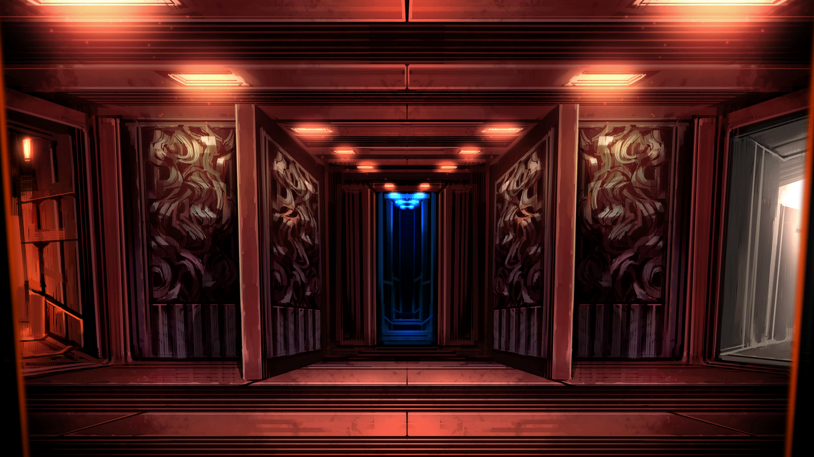

For Those Who Stray From The Path
It appears you have ventured into an uncharted part of the corridors. Management suspected as much could happen, so we left a door open for you to return.
If you need to contact the owner of this page, utilize this link to email them
Click on the image below, or on this link, to return back to the home page.
